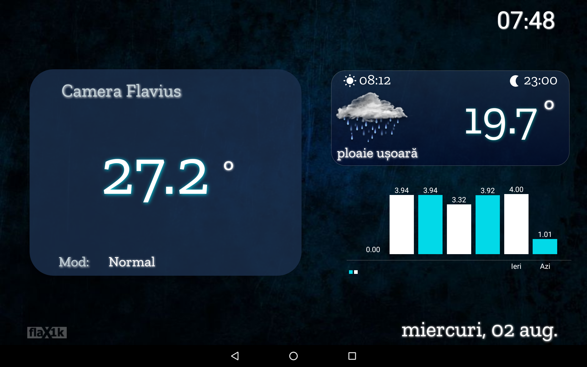
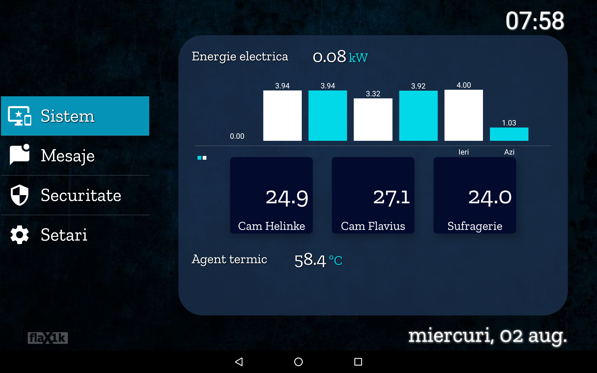
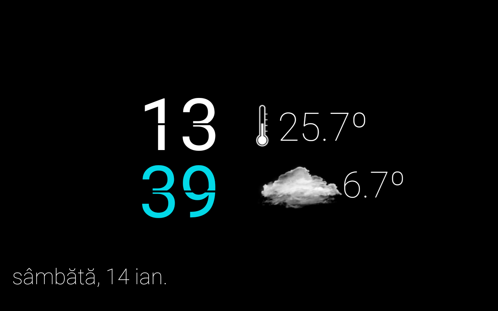

flaON update v23.2
Long time no post in here, so here are the latest updates of the flaON project, that now has reached the v23.2. The bigest change is that I've switched to API websockets communication instead of MQTT and my house is using NodeRed as gateway instead of Webthings gateway from Mozilla.
The gateway
I used Webthing gateway from the Mozilla as the main gateway for a very long time and it worked decent. But MW has some restrictions, some limitations, so I moved to NodeRed gateway.
It has so many add-ons, so many forum threads and discussions, and is much, much more advanced than Webthing gateway.
I am still a newbie using this gateway but so far I like it very much and fullfill my expectations.
The communication protocol
All my house sensors still communicate with the new gateway from NodeRed using the MQTT protocol. It's light, fast and secure. The communication between gateway and the wall mounted tablets is made using the websockets API that link with NodeRed.
The design
The android app design has slightly changed. Below is the latest UI interface for the tablets:

The weather widget is smaller and a linear graph of energy consumption is added under the weather widget.
The month's events list was replaced by a single line that shows the daily events.

The menu from the second slide was replaced by a menu fragment and adapter, much easy to use and to code.

The screensaver remains the same, like the springtime version (v.23.1)